Reflection
I am quite new to all the areas involved in this project. What little experience I did have in coding didn’t carry me as far through the development of this website as I thought it would have. As for the other tasks (CARP posters and typography) they were completely new to me. I have never had experience in most of the Adobe programs other than Photoshop so that was another new learning experience for me. Despite my lack of initial knowledge to these programs and coding languages I am very proud of the work I finished with.
With the provided documentation, worksheets and tutorials available through out this project made the learning experience for me very quick and efficient. The fundamentals taught through the given worksheets paved way for me to design my website into something different from the basics that resulted from the worksheets. From what was provided to me, I went further beyond those fundamentals and researched and learnt more that I could incorporate into my website. I worked through the additional optional worksheet that was provided to learn how to create an image carousel to further boost the complexity and overall unique feel of my website design.
Further down this page are my initial wireframes, flowchart and colour palette of my website of which shows my consideration for the flow and feel for the website. I wanted each page of my website to have a different layout to make each one unique. I designed it this way to showcase the different skills and techniques I am capable of. Whilst doing so I also made sure to keep each page within my desired theme to keep continuity between the pages so that it doesn’t feel like each page is from a whole different design style and out of place. From what I originally designed, some of the pages varied quite differently though the main things that changes was the colour palette. As I was working on my website, I felt that my initial colour palette didn’t work together as well as I had hoped, and I found myself changing it part way through. I believe this was the right choice as the colours work together better than my original design.
Some larger struggles I came across during this project include getting the website to display correctly on a mobile device. The initial scaling issues I came encountered early on were very demoralising as I found it very difficult to find the correct solutions to what I was facing. In the end I was able to get the wepage to load and run seamlessly on both desktop and on the mobile devices I tried it on.
Overall, this whole project has been very challenging for me, but also very rewarding. Going from being someone with very little experience in all the required tasks to having a whole website made, multiple CARP poster designs and typography pieces; it’s something I would not have expected I’d be able to produce from the couple months this project has been. I am very proud of what I was able to accomplish.
 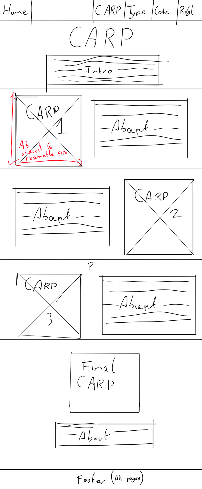
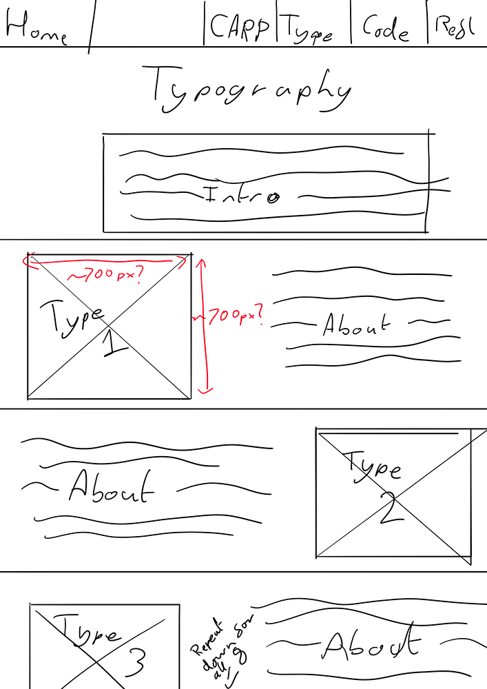
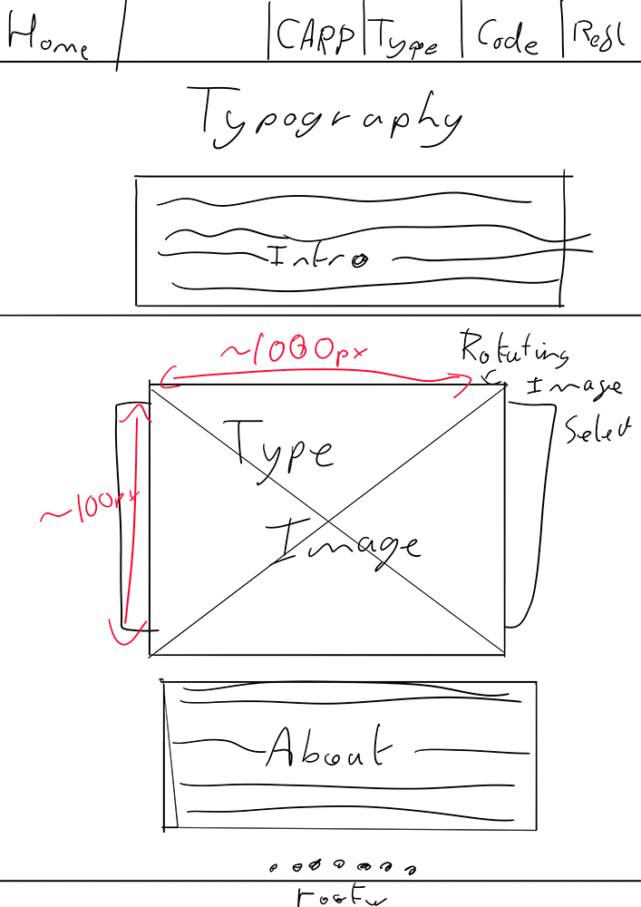
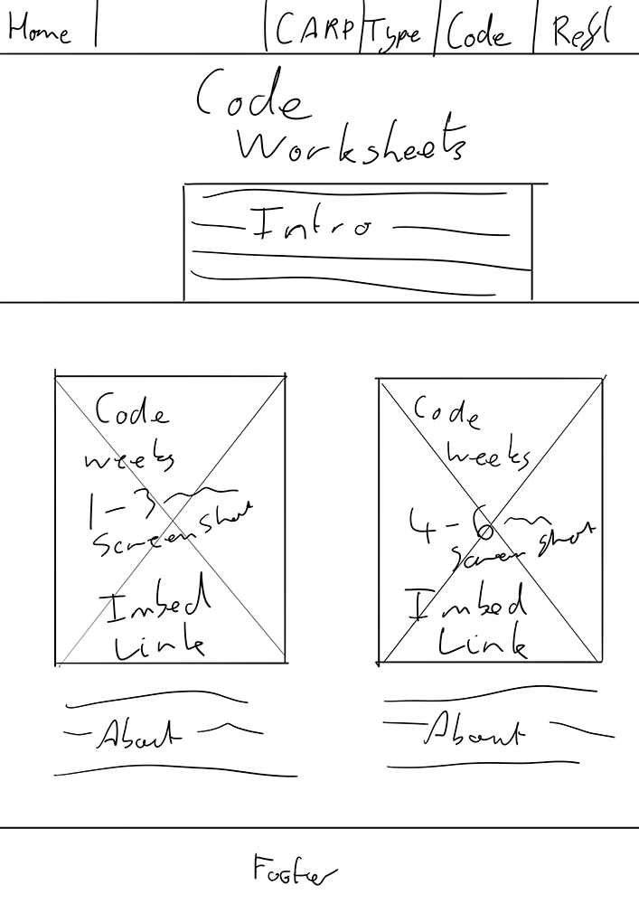
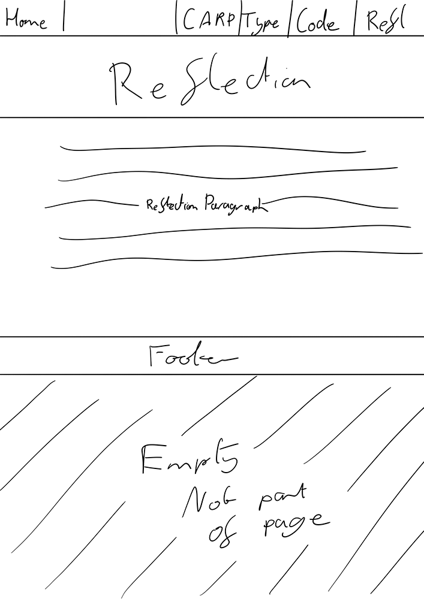
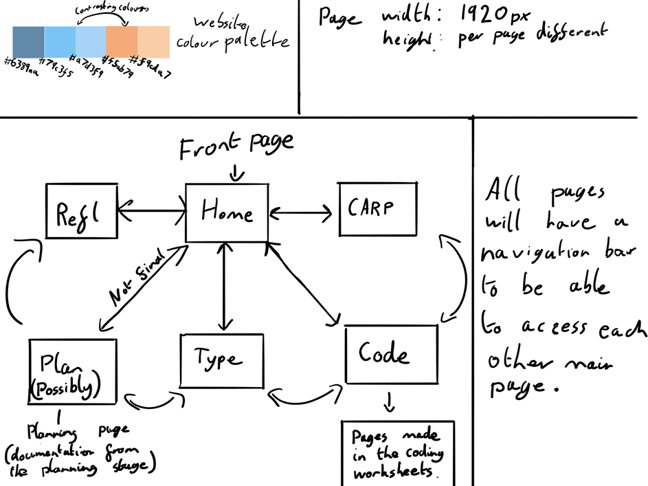
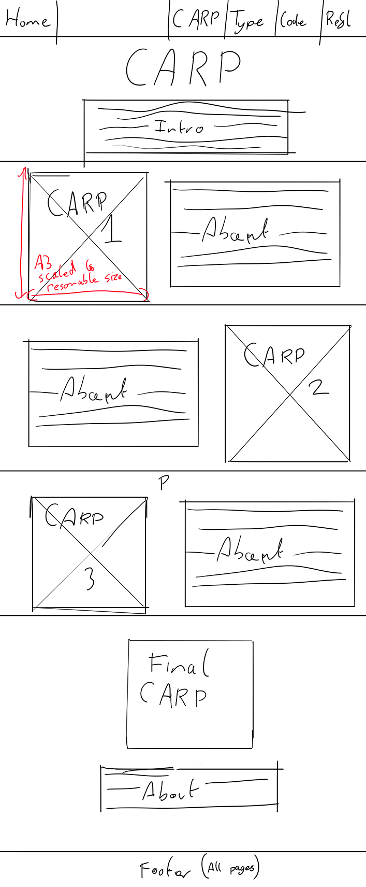
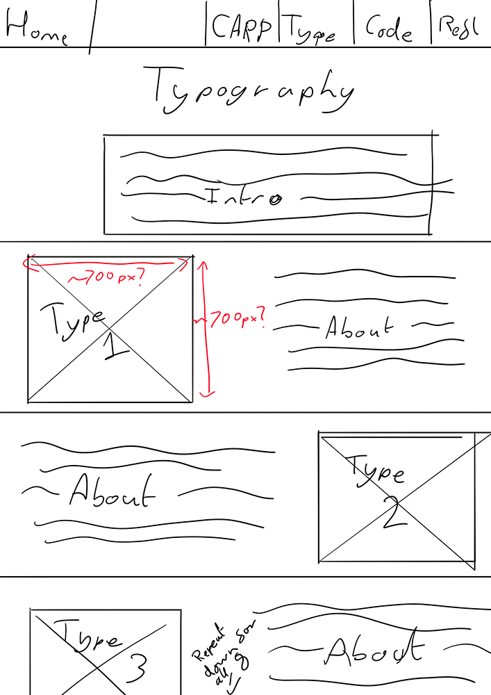
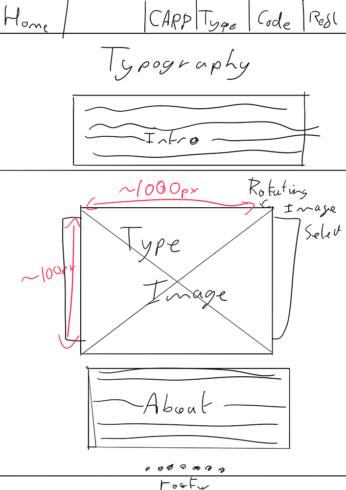
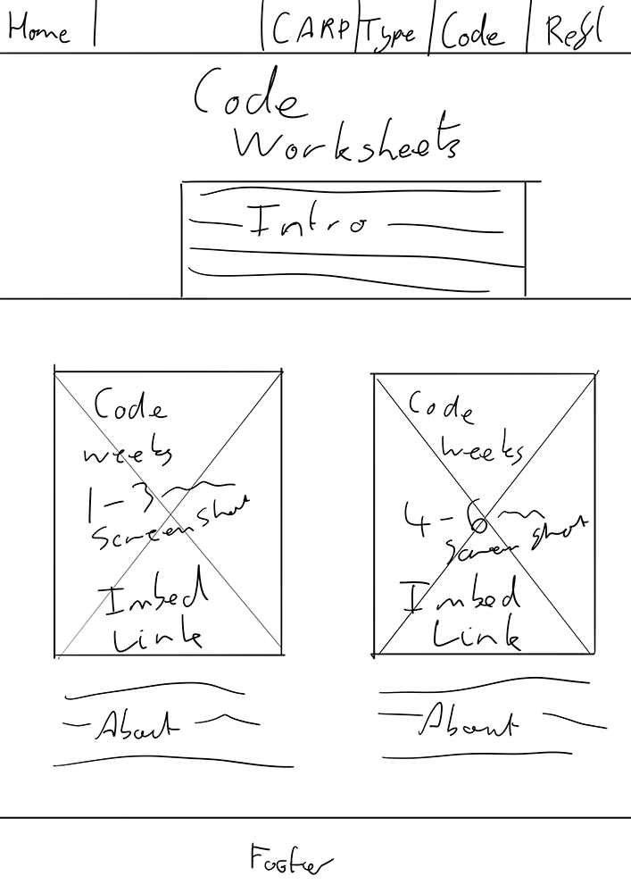
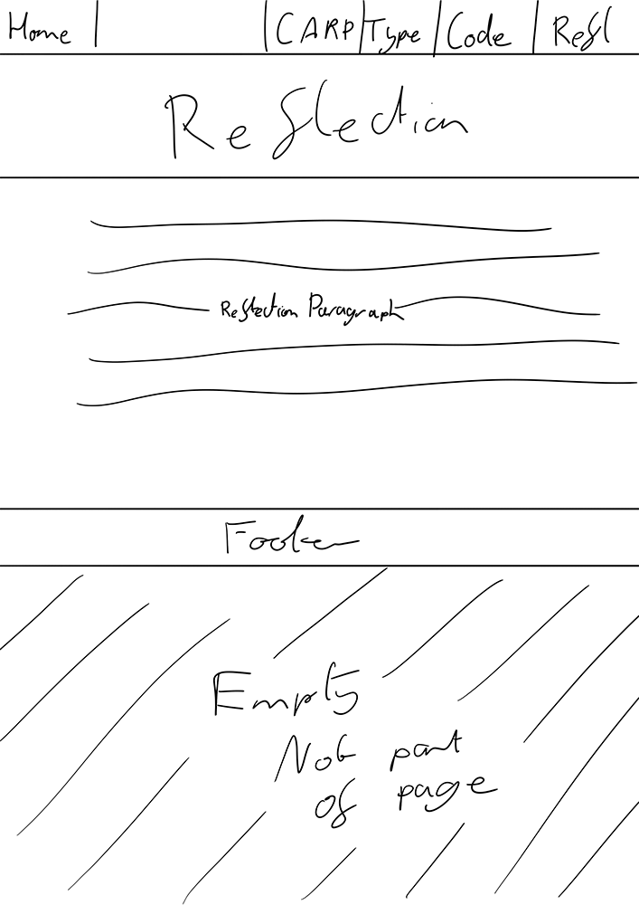
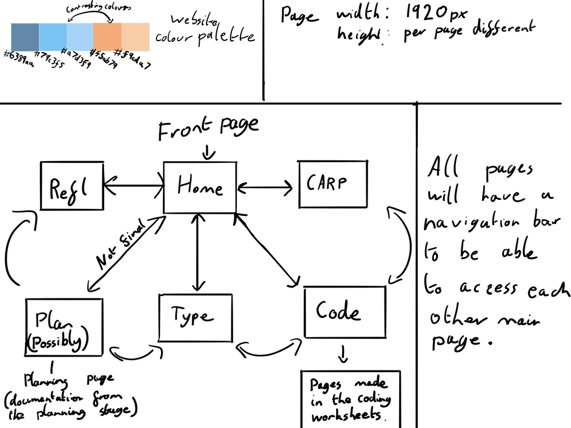